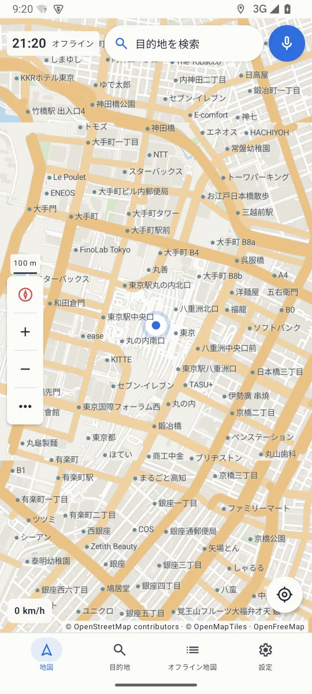
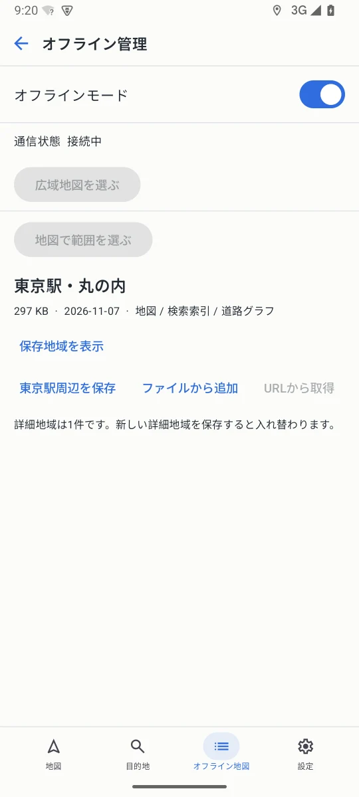

01 / 地図
現在地から、すぐに出発。
地図上で現在地を確認し、目的地を探してルートを表示。走行中は日本語音声が曲がる場所を案内します。
Navl v0.1.1 開発版のエミュレーター画面
アプリ画面
画面を切り替えて、地図とオフライン機能を確認できます。

01 / 地図
地図上で現在地を確認し、目的地を探してルートを表示。走行中は日本語音声が曲がる場所を案内します。
02 / 横画面
スマートフォンを横にしたときも、タブレットに載せたときも、地図と操作ボタンが画面の向きに合わせて並びます。

03 / オフライン
出発前に使うエリアを保存。保存した地図をオフラインで表示し、経路データのある地域ではオフライン経路探索も利用できます。
機能
施設名で探すか、地図上の施設をタップ。施設の詳細から案内を始められます。
曲がる場所や進行方向を読み上げます。利用できる音声は端末の読み上げ設定に依存します。
必要な範囲を選び、地図を端末に保存。対応する経路データを用意した地域では圏外でもルートを利用できます。
ANDROID 向け
現在配布中の v0.1.0 はプレビュー版です。
APKを端末で開き、Androidの画面に沿ってインストールしてください。現在地の表示と案内には、位置情報の許可が必要です。
通信できる場所で、必要な地域をアプリに保存してください。オフライン経路探索は経路データの収録範囲に限られます。
v0.1.1 の開発版をAndroidエミュレーターで動かし、東京駅周辺を表示して撮影しました。